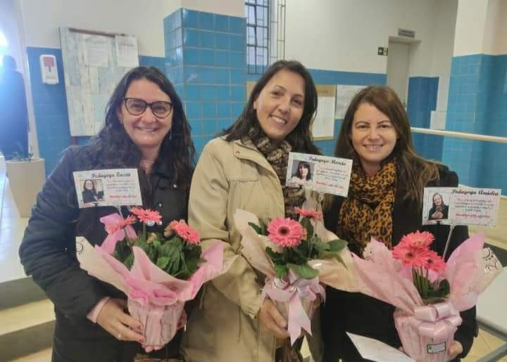

Somos uma instituição que busca dar o melhor aos seus estudantes.
Na direção se encontra Edemilso Pedro Rech e como
vice-diretor Maurício Homiak, juntamente de secretárias(o),
pedagogas (responsáveis da orientação), secretárias(os), bibliotecária, tias da limpeza e da merenda e também
excelentes professores que dão o seu melhor para que o aluno possa
entender e compreender a disciplina.
Com uma instalação de ensino tendo:
10 salas de aulas, sala de diretoria, sala de professores,
laboratório de informática,
laborarório de ciências,sala de recursos multifuncionais para Atendimento Educacional
Especializado (AEE), quadra de esportes coberta,
quadra de esportes descoberta,
cozinha, biblioteca, banheiro e espaços adequado à alunos com deficiência ou mobilidade
reduzida, sala de secretaria, despensa,
pátio coberto e descoberto, e também área verde.
Cada dia mais estamos buscando o melhor a nossos alunos, pois sabemos da importância que é estudar e o
futuro dos estudantes. Queremos que o aluno aproveite cada oportunidade pois hoje em dia,
a escola e o estudo tem se tornado mais acessível.

Na direção Edemilso Rech e Mauricio Homiak, e nossas pedagogas.

O surgimento do colégio
O Colégio Estadual Francisco Ramos teve sua construção iniciada em 1949 e sua inauguração ocorreu em 1951, ou seja, já possui mais de 80 anos.
Já teve 10 diretores até o momento nessa instituição, são eles:
Maria de Lourdes Cordeiro Gumiero - 1966/1981
Izelia Santina Marconato Prates - 1981/1989
Rosangela Mereth Ribeiro - 1990/1991
Teresinha Valenga Ratuchinski - 1992/1995
Edemilso Pedro Rech - 1996/2000
Tania Maria Fenker Ragugnetti - 2001/2003
Gilson Possoban - 2004/2005
Valmy Divanir Blum Dalmolim - 2006/2008
Rosana Aparecida Ribeiro de Sene - 2009/2015
Edemilso Pedro Rech - 2016/2021
Juntamente de uma boa equipe sempre procuram cumprir suas metas e objetivos e garantindo o melhor aos
seus alunos.
Quando iniciou possuía aproximadamente 41 alunos no colégio.
Hoje possui aproximadamente 570 alunos, o ensino médio começou em 1997, enquanto antes tinha turmas do ensino
fundamental e hoje possui algumas turmas que tinham naquela época que passaram a ser pertencentes ao município. Então hoje possui da 6° série até o 9° ano no ensino fundamental e do primeiro ao terceiro ano no ensino médio.
Sempre buscam incentivar os alunos a virem estudar pois é muito importante e também para que não atinjam
o índice de reprovação que tem a cada ano, de quantos alunos reprovaram como é feito.
As pedagogas são: Anádia Gontarz Maier, Debora Pauluk Seleboge e Marcia Wagner.
Conheça alguns de nossos professores(as), secretário e secretárias, e as tão famosas tia da merenda,
que fazem parte desse departamento e equipe.